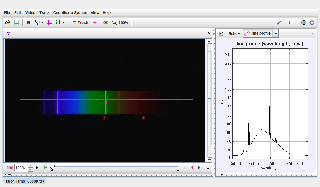

Tracker Experiment
This is the spectrum of a fluorescent tube with HeNe red (633nm) and green (543 nm) laser spots for calibration. The manufacturer's rated color temperature for the tube is 6300K. The fluorescent tube contains a gas and is coated on the inside with fluorescent dyes.
Analysis:
- Identify the gas by measuring the wavelengths of the lines in the spectrum.
- How many different fluorescence peaks are identifiable? What is the wavelength of the brightest fluorescence peak?
- Which gas line(s) might be exciting this fluorescence peak?
Author: Douglas Brown
Contact: dobrown@cabrillo.edu